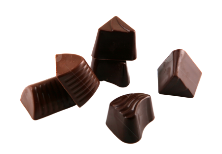

Precisamos entender que um atleta precisa de energia, ou seja, ele precisa consumir carboidratos antes das atividades para conseguir realizá-las em melhor e maior nível, em termos de desempenho.
Mas você deve estar se perguntando qual é o melhor alimento que pode ser usado como fonte de carboidrato, para qual eu devo dar maior atenção ou, qual eu devo evitar...🤔Esses alimentos voçê deve evitar,pois podem trazer danos á saúde por conterem uma grande quantidade de açúcares refinados, eles são:
É de suma importância sabermos que os atletas não precisam seguir uma dieta sem açúcares e gorduras, elas tem um papel importante em certa parte do processo. A Nutricionista Natália Guerra Bordignonexplica mais detalhadamente afunção dos acúcares em prol dos atletas em seu blog: 
"Mas a nutricionista também comenta que os açúcares são aliados na rotina de quem pratica esportes e explica que dietas restritivas em carboidratos em dias de prova afetam o desempenho do atleta, pois impacta na função cognitiva, aumento de confusão mental e aumento de fadiga e cãibras. No entanto, o consumo de carboidratos não precisa incluir necessariamente doces ou bebidas com açúcar refinado. Grãos, massas e frutas são ricos em carboidratos, inclusive os simples, em alguns casos, como o da banana."
Ao lermos esse trecho de seu blog entendemos que os açúcares são sim importantes em certa parte do processo, mas não devemos usufruir exageradamente, pois sim eles podem gerar um impacto negativo no nosso corpo se consumido em grades quantidades e em momentos errados
Uma das grandes consequências é um ganho de peso para o atleta e consequentemente um aumento de gordura corporal gerarando constipação, disbiose intestinal, diminuição da absorção de vitaminas e minerais. E também diminuir o sistema imune, deixando este atleta vulnerável para gripes, infecções e lesões. Então essas implicações acabam gerando a queda da performance esportiva de vida das diminuições das capacidades fisiológicas do atleta, como exemplo, velocidade, potência e capacidade. aeróbica